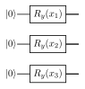
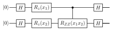
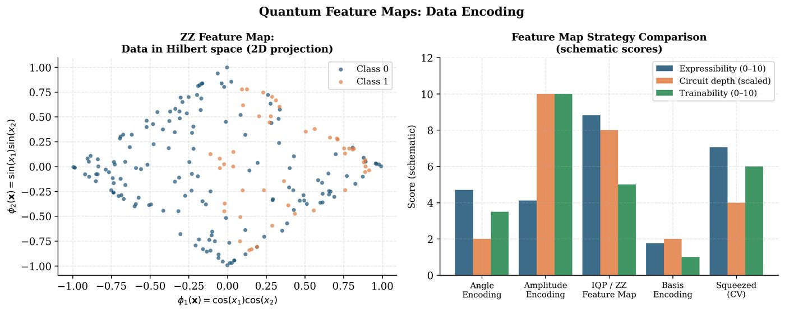

Chapter 7: Quantum Feature Maps and Data Encoding¶
How do we get classical data into a quantum computer? This question — the data encoding problem — is among the most practically important in QML. The choice of encoding determines the inductive bias, computational overhead, and potential quantum advantage of any QML model. This chapter surveys the major encoding strategies and their theoretical properties.
Learning Objectives
By the end of this chapter, you will be able to:
-
Implement amplitude, angle, basis, and IQP-style encodings
-
Analyze the expressibility and inductive bias of each encoding
-
Explain the data re-uploading approach and its universality
-
Discuss the qRAM assumption and its practical challenges
-
Design custom feature maps for specific data types
7.1 The Data Encoding Problem¶
Classical data \(\mathbf{x}\in\mathbb{R}^d\) must be mapped to a quantum state \(|\phi(\mathbf{x})\rangle\in\mathbb{C}^{2^n}\). The mapping is a quantum feature map:
The induced quantum kernel is the fidelity:
Warning
Every encoding strategy makes implicit choices about which data similarities are preserved. A mismatch between the encoding’s inductive bias and the true data geometry can lead to poor generalization — regardless of quantum hardware quality.
7.2 Amplitude Encoding¶
Definition: Amplitude Encoding
Given \(\mathbf{x}\in\mathbb{R}^{2^n}\) with \(\|\mathbf{x}\|=1\), amplitude encoding maps:
Requires \(n = \lceil\log_2 d\rceil\) qubits to encode \(d\) features.
Pros: Exponential compression (\(2^n\) features in \(n\) qubits).
Cons: State preparation requires \(O(2^n)\) gates in general; needs qRAM.
Induced kernel: \(k_Q^{\text{amp}}(\mathbf{x},\mathbf{x}') = |\langle\phi(\mathbf{x})|\phi(\mathbf{x}')\rangle|^2 = (\mathbf{x}^\top\mathbf{x}')^2\) for real vectors.
Important
The qRAM assumption: Loading \(N\) classical data points via amplitude encoding requires a quantum random access memory (qRAM) device, which can prepare arbitrary superpositions in \(O(\text{poly}(\log N))\) time. No qRAM at scale exists in 2025. This critically limits amplitude encoding in practice.
7.3 Angle Encoding¶
Definition: Angle Encoding
Each feature \(x_i\) is encoded as a rotation angle on qubit \(i\):
Result: \(|\phi(\mathbf{x})\rangle = \bigotimes_{i=1}^n (\cos(x_i/2)|0\rangle + \sin(x_i/2)|1\rangle)\).
Pros: Simple, hardware-efficient, depth-1 circuit. Cons: Requires \(n = d\) qubits; product state (no entanglement initially).
Variants:
-
ZZ encoding: \(U = \prod_{i < j} R_{ZZ}(x_ix_j) \prod_i R_z(x_i)\)
-
Pauli encoding: Rotate each qubit about \(X\), \(Y\), or \(Z\) axis
-
Full encoding: \(R_z(x_i)R_y(x_{i+n})R_z(x_{i+2n})\) using 3 angles per qubit

7.4 IQP-Style Feature Maps¶
Instantaneous Quantum Polynomial (IQP) circuits consist of diagonal gates (in the computational basis) sandwiched between Hadamard layers:
Quantum advantage claim (Liu et al. 2021): For certain IQP-based kernels, classical simulation requires exponential time (unless the polynomial hierarchy collapses). This provides a provable separation between quantum and classical kernels for specific learning tasks.

7.5 Data Re-Uploading¶
Introduced by Pérez-Salinas et al. (2020) (Pérez-Salinas et al. 2020): encode data \(r\) times, interleaved with trainable rotations.
Universality theorem: A single-qubit circuit with \(r \geq 2n+1\) re-uploads can approximate any continuous function of \(n\) inputs to arbitrary accuracy.
Solved Example 7.1
Problem: Design a 1-qubit data re-uploading circuit for \(f(x) = \sin(2x)\cos(x)\) using \(r=3\) uploads of \(x\).
Solution: Circuit: \(U = R_z(\theta_3)R_y(x)R_z(\theta_2)R_y(x)R_z(\theta_1)R_y(x)\). The Fourier series generated by 3 uploads of \(x\) contains frequencies \(\{-3,-2,-1,0,1,2,3\}\) — sufficient to represent \(f(x) = \sin(2x)\cos(x) = \frac{1}{2}(\sin(3x)+\sin(x))\). Train \(\{\theta_1,\theta_2,\theta_3\}\) to minimize \(\ell = \sum_k(\langle Z\rangle_k - f(x_k))^2\).
7.6 Basis Encoding and Computational Basis¶
For binary/integer data \(\mathbf{x}\in\{0,1\}^n\):
Pros: Trivial state preparation (\(O(n)\) \(X\) gates). Cons: Only handles discrete data; no smoothness in the kernel.
7.7 Comparison of Encoding Strategies¶

| Method | Qubits | Depth | Kernel | Practical? |
|---|---|---|---|---|
| Amplitude | \(\lceil\log_2 d\rceil\) | \(O(d)\) / qRAM | \((\mathbf{x}^\top\mathbf{x}')^2\) | Needs qRAM |
| Angle | \(d\) | \(O(1)\) | Product kernel | Yes |
| IQP | \(d\) | \(O(d^2)\) | Quantum-native | NISQ-scale |
| Re-upload | \(1\) to \(d\) | \(O(rL)\) | Trainable | Yes |
| Basis | \(n\) | \(O(n)\) | Hamming-based | Binary data |
import pennylane as qml
import numpy as np
n_qubits = 4
dev = qml.device("default.qubit", wires=n_qubits)
# Angle encoding
@qml.qnode(dev)
def angle_encoding(x):
qml.AngleEmbedding(x, wires=range(n_qubits), rotation='Y')
return qml.state()
# IQP-style (ZZFeatureMap equivalent)
@qml.qnode(dev)
def iqp_encoding(x):
# First Hadamard layer
for i in range(n_qubits): qml.Hadamard(i)
# Feature rotations
for i in range(n_qubits): qml.RZ(x[i], wires=i)
# ZZ interactions
for i in range(n_qubits-1):
qml.IsingZZ(2*(np.pi-x[i])*(np.pi-x[i+1]), wires=[i, i+1])
# Second Hadamard layer
for i in range(n_qubits): qml.Hadamard(i)
return qml.state()
# Data re-uploading
@qml.qnode(dev)
def reuploading(x, params, n_layers=3):
for l in range(n_layers):
for i in range(n_qubits):
qml.RZ(x[i
qml.RY(params[l, i, 0], wires=i)
qml.RZ(params[l, i, 1], wires=i)
for i in range(n_qubits-1):
qml.CNOT(wires=[i, i+1])
return qml.expval(qml.PauliZ(0))
x = np.array([0.5, 1.2, -0.3, 0.8])
params = np.random.randn(3, n_qubits, 2)
print("Re-uploading output:", reuploading(x, params))
7.8 Chapter Summary¶
Chapter Summary
-
Amplitude encoding: \(n = \log_2 d\) qubits but requires \(O(d)\)-depth state preparation or qRAM. Induced kernel = dot-product squared.
-
Angle encoding: One qubit per feature, depth-1. Simple and practical. Product kernel structure; no entanglement before ansatz.
-
IQP encoding: Creates non-trivial quantum correlations via ZZ interactions. Provably hard to simulate classically, enabling quantum kernel advantage.
-
Data re-uploading: Universal quantum classifier with a single-qubit. Generates Fourier series in the data; expressibility grows with repeats.
-
Choice matters: Encoding determines inductive bias. Matching the encoding to data structure is as important as the ansatz.
Exercises
Exercise . For angle encoding \(|\phi(\mathbf{x})\rangle = \bigotimes_i (\cos(x_i/2)|0\rangle + \sin(x_i/2)|1\rangle)\), compute the quantum kernel \(k_Q(\mathbf{x},\mathbf{x}') = |\langle\phi(\mathbf{x})|\phi(\mathbf{x}')\rangle|^2\). Show it factors as \(\prod_i \cos^2\!\big(\frac{x_i-x_i'}{2}\big)\).
Exercise . Design a 3-qubit amplitude encoding circuit for \(\mathbf{x} = [1/2, 1/2, 1/2, 1/2, 0, 0, 0, 0]^\top/\sqrt{2}\). Write the gate sequence.
Exercise . Prove that data re-uploading with \(r\) uploads of \(d\)-dimensional data on \(n\) qubits can generate Fourier coefficients with frequencies up to \(r\) in each dimension.
Exercise . Compute and visualize the kernel matrix \(\mathbf{K}_{ij} = k_Q(\mathbf{x}_i,\mathbf{x}_j)\) for both angle encoding and IQP encoding on the Iris dataset (first 2 features, 30 points). Compare the kernel matrices as heatmaps.
Further Reading
-
Schuld & Killoran (2019) (Schuld et al. 2019) — quantum feature spaces and kernels
-
Pérez-Salinas et al. (2020) (Pérez-Salinas et al. 2020) — data re-uploading
-
Liu et al. (2021) (Liu et al. 2021) — quantum kernel learning advantage